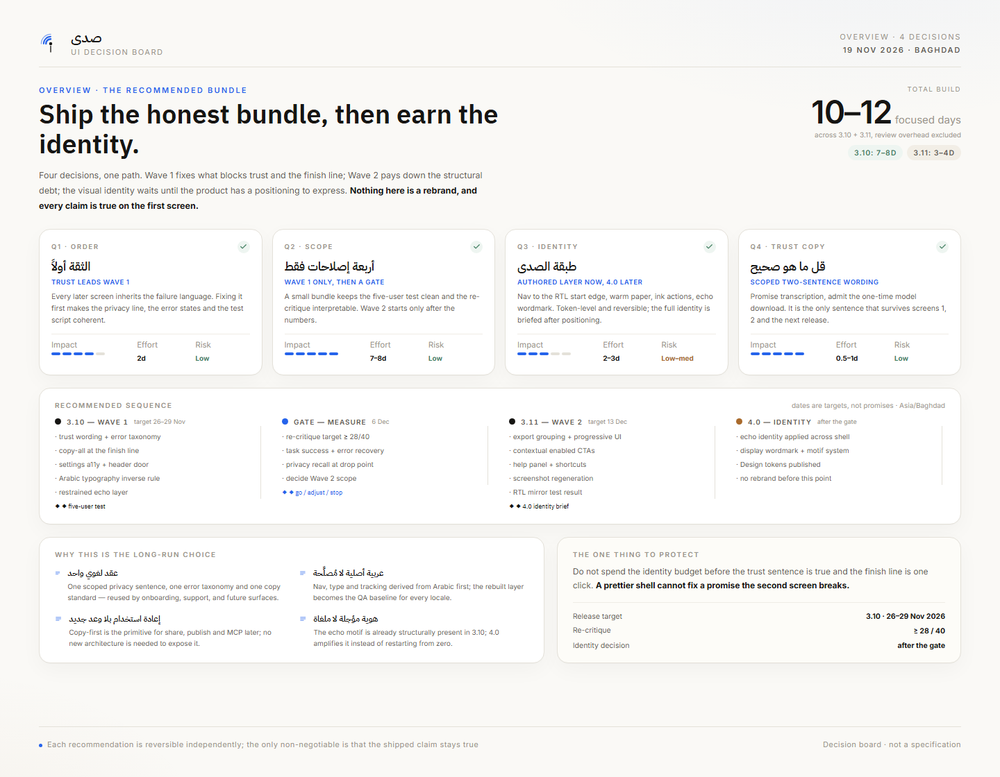
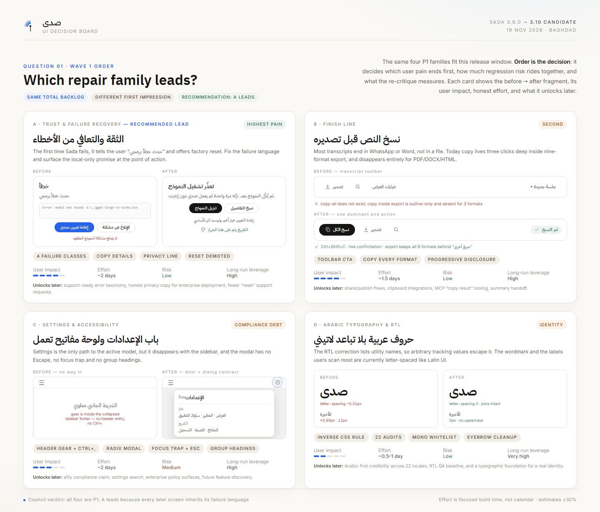
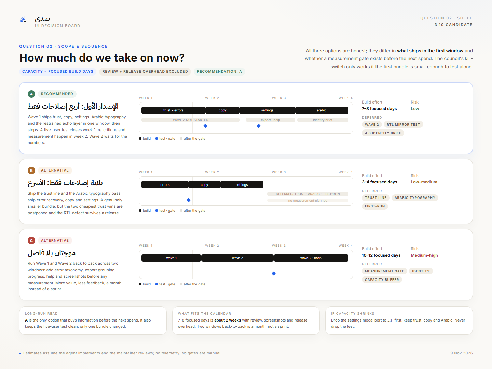
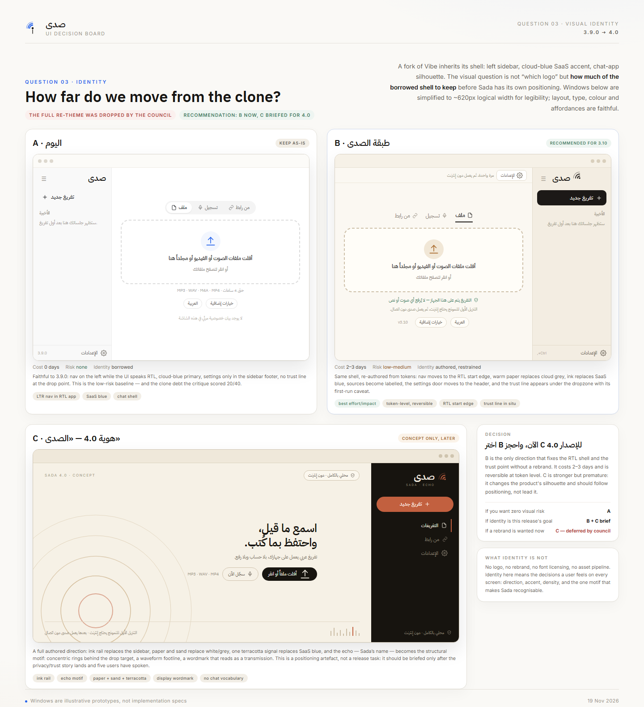
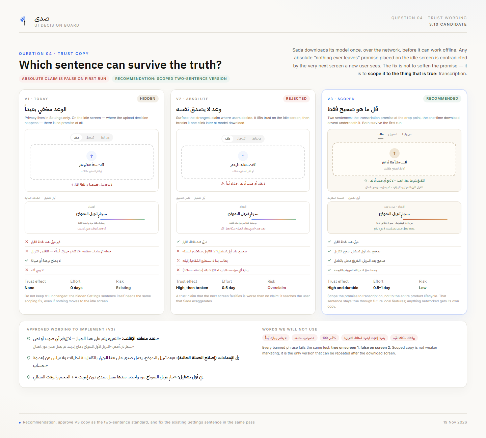

Visual prototypes for the four open decisions after the v3.9.0 UI/UX critique and the Qiyas council. Each board shows the before/after fragment, impact, honest build effort, risk, and what the choice unlocks later. These are decision aids — not implementation specifications.
Lead with trust & recovery (Q1 A) · ship Wave 1 only, then measure (Q2 A) · add the restrained echo layer now and brief the full identity for 4.0 (Q3 B) · adopt the scoped two-sentence trust copy (Q4 V3). Total: 7–8 focused days for 3.10, 3–4 more for 3.11.




